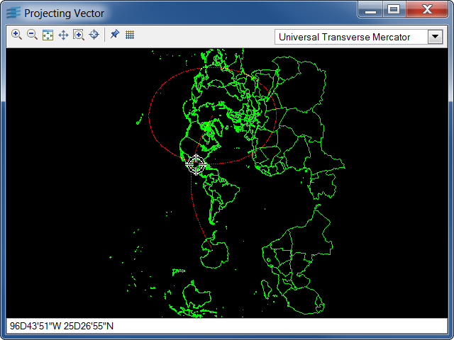

projvectProjects a vector representation of the earth.
This sample shows how to project a vector file, the available projections being listed in a combo box. The icons in the toolbar allow you to quit the application, zoom in and zoom out the projected image, fit the image in the view, pan and zoom the view. An interactor is available to center the projection and a grid can be displayed on the image.
IlvProjection